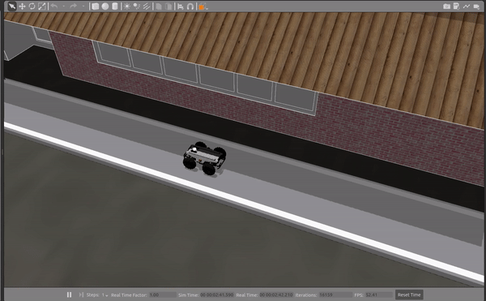

Getting started with ROS¶
The Robot Operating System (ROS) is a flexible framework for writing robot software. It is a collection of tools, libraries, and conventions that aim to simplify the task of creating complex and robust robot behavior across a wide variety of robotic platforms.
We have planned this competition around ROS because of its features as well as its widespread use in robotics research and industry.
To get started with ROS (if you are a beginner), we recommend you follow the "Beginner Level" tutorials in the official ROS Tutorials. Ensure you complete at least the following:
- Chapter 5 (ROS Nodes): "This tutorial introduces ROS graph concepts and discusses the use of roscore, rosnode, and rosrun commandline tools"
- Chapter 6 (ROS Topics): "This tutorial introduces ROS topics as well as using the rostopic and rqt_plot commandline tools."
- Chapter 12 (Writing simple publisher and subscriber in Python)
- Understand the core tools provided by ROS, including RViz, rqt_graph, Gazebo, etc.
After you complete the required tutorials listed above, you can start setting up the workspace.
Assuming the workspace at ~/catkin_ws/ as completed from the steps done in setting up your workspace,
This should be your folder structure till now.
~/catkin_ws/
├── build/
│ ├── .
│ └── .
├── devel/
│ ├── .
│ └── .
└── src/
├── CMakeLists.txt
└── parc-engineers-league/
├── parc-robot/
│ ├── .
│ ├── .
│ ├── CMakeLists.txt
│ └── package.xml
├── .
└── .
First step is to create your solution folder in ~/catkin_ws/src/, we can call it parc_solutions for example.
mkdir ~/catkin_ws/src/parc_solutions
Go inside the folder,
cd ~/catkin_ws/src/parc_solutions
And here you can create a new ROS package called test_publisher (for example) by running the command below,
catkin_create_pkg test_publisher roscpp rospy std_msgs geometry_msgs
Moving the Robot Programmically¶
Setting up your workspace guide has already shown how to control the robot with keyboard using teleoperation
But this guide will help you to move the robot by publishing commands to /cmd_vel topic programmically using a Python script.
To do this, create a file, robot_publisher.py inside scripts folder in your ROS package (for example test_publisher) and make it executable.
mkdir test_publisher/scripts
touch test_publisher/scripts/robot_publisher.py
chmod +x test_publisher/scripts/robot_publisher.py
NOTE: You need to change the permission of the file to executable to be able to run (as done in the last command shown above).
Now open the file and copy and paste the following code inside:
#!/usr/bin/env python
"""
Script to move Robot
"""
import rospy
from geometry_msgs.msg import Twist
import time
def move_robot():
rospy.init_node('robot_publisher', anonymous=True)
# Create a publisher which can "talk" to Robot and tell it to move
pub = rospy.Publisher('/cmd_vel', Twist, queue_size=10)
# Set publish rate at 10 Hz
rate = rospy.Rate(10)
# Create a Twist message and add linear x and angular z values
move_cmd = Twist()
######## Move Straight ########
print("Moving Straight")
move_cmd.linear.x = 0.5 # move in X axis at 0.5 m/s
move_cmd.angular.z = 0.0
now = time.time()
# For the next 4 seconds publish cmd_vel move commands
while time.time() - now < 4:
pub.publish(move_cmd) # publish to Robot
rate.sleep()
######## Rotating Counterclockwise ########
print("Rotating")
move_cmd.linear.x = 0.0
move_cmd.angular.z = 0.3 # rotate at 0.3 rad/sec
now = time.time()
# For the next 3 seconds publish cmd_vel move commands
while time.time() - now < 3:
pub.publish(move_cmd) # publish to Robot
rate.sleep()
######## Stop ########
print("Stopping")
move_cmd.linear.x = 0.0
move_cmd.angular.z = 0.0 # Giving both zero will stop the robot
now = time.time()
# For the next 1 seconds publish cmd_vel move commands
while time.time() - now < 1:
pub.publish(move_cmd) # publish to Robot
rate.sleep()
print("Exit")
if __name__ == '__main__':
try:
move_robot()
except rospy.ROSInterruptException:
pass
This code will make the robot move straight for 4 seconds, rotate counterclockwise for 3 seconds and then stop.
To see it working, first run the robot in simulation by running the following command in one terminal
source ~/catkin_ws/devel/setup.bash
roslaunch parc-robot task1.launch
And run the following command in another terminal to run this new program:
source ~/catkin_ws/devel/setup.bash
rosrun test_publisher robot_publisher.py
If you have set up everything well, you should see the robot moving in Gazebo as below:
